SUBMISSION
Students can upload assignment answers directly through the application, with task context prepared by course.
CASE STUDY / IEEE PUBLICATION
A user-centered redesign study for the UNESA Siakadu mobile application, combining usability testing, UX research, and interface improvement.
The project evaluated the UNESA Siakadu academic mobile application and translated user feedback into concrete interface and feature improvements. The study followed a user-focused cycle of needs identification, prototyping, usability testing, evaluation, and refinement.
Siakadu supports academic and administrative tasks including class schedules, attendance, KRS/KHS, payment information, and access to campus news. The research identified opportunities to make those interactions more intuitive and useful for students and lecturers.
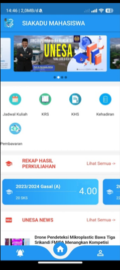
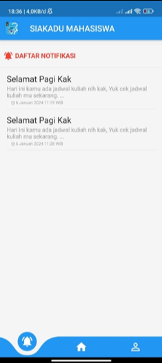
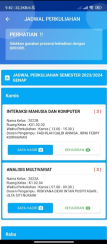
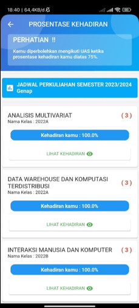
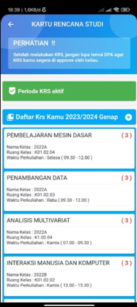
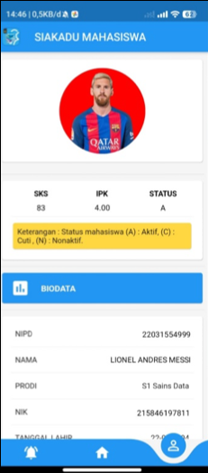
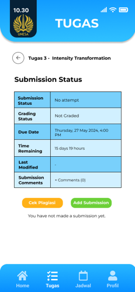
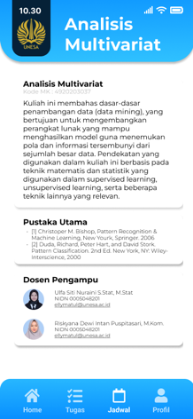
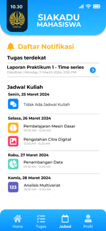
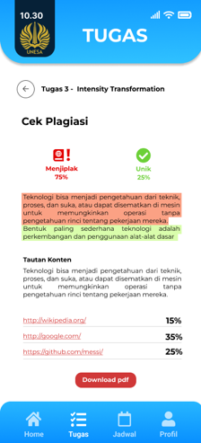
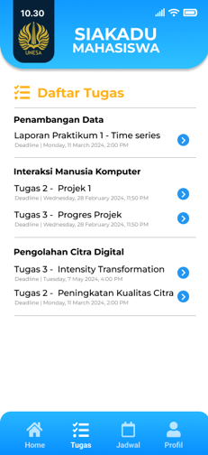
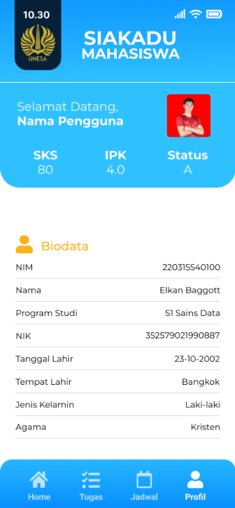
The study used questionnaires, interviews, and observation. Initial findings were translated into Figma prototypes, then tested again to compare the impact of the proposed improvements.
Students can upload assignment answers directly through the application, with task context prepared by course.
A similarity-check workflow was added after submission so students can inspect originality before finalizing work.
Assignment deadlines were added to notifications to help students manage upcoming academic tasks.
Course, schedule, assignment, profile, and academic information were reorganized for clearer access.
The improved design focused on accessibility and a more intuitive experience across devices.
Observed pain points and questionnaire results were converted into iterative design decisions rather than assumptions.
Before the update, only 7 of 37 respondents gave the highest score for their overall experience. After the update, the study reported improvements in perceived helpfulness, memorability, interface intuitiveness, design appeal, and information clarity.
“The redesign turns recurring user complaints into concrete product changes.”
The strongest part of this project is not a single screen. It is the process: observe how people use the system, identify friction, prototype a response, test it again, and use the evidence to guide the next iteration.
This work was published as “Utilizing Usability Testing for User Interface Improvement: Case Study on Unesa’s Academic Mobile Application.” The paper documents the research design, usability evaluation, interface improvements, and post-update findings.
OPEN IEEE XPLORE ↗